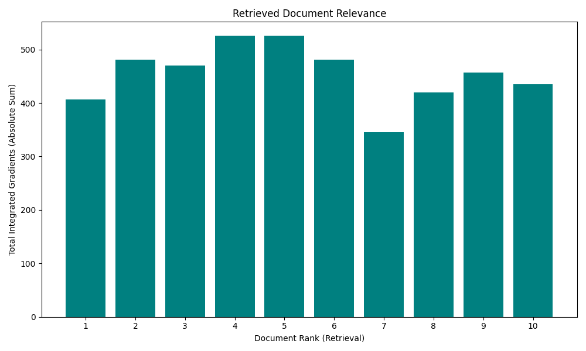
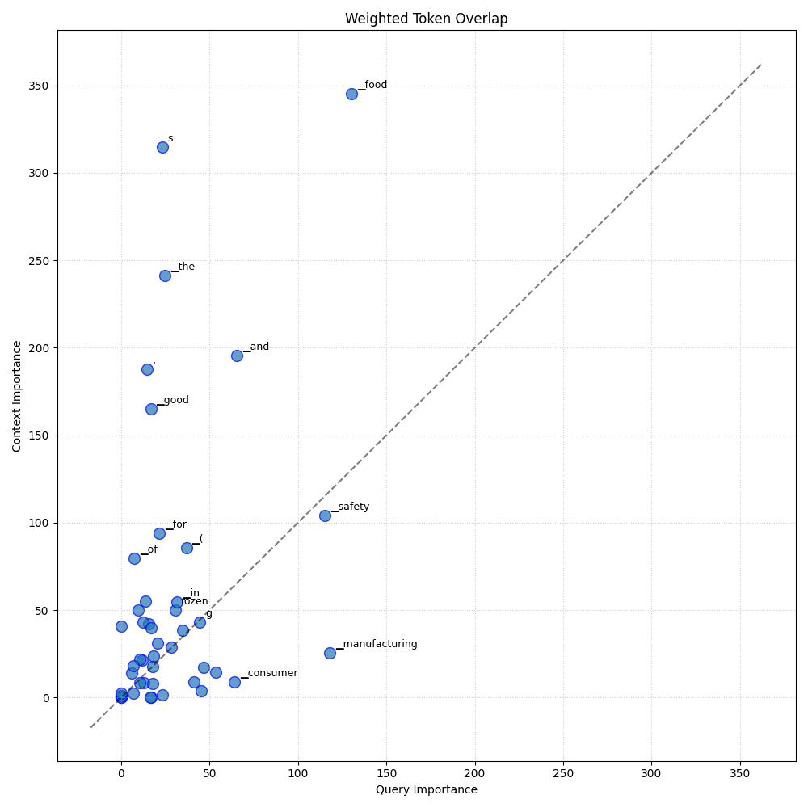

Analysis: query_1
Query: ▁query:▁As▁a▁consumer▁interested▁in▁food▁safety,▁could▁you▁elaborate▁on▁the▁guidelines▁and▁good▁manufacturing▁practices▁(GMP)▁that▁are▁in▁place▁for▁fresh▁meat,▁poultry,▁and▁game,▁as▁well▁as▁for▁frozen▁fish▁products,▁and▁how▁these▁practices▁ensure▁the▁safety▁and▁quality▁of▁these▁food▁items?
Document Relevance

Weighted Overlap

Token Comparison

Documents
Document 1 (Click to Expand)
▁And▁we've▁had▁the▁poultry▁growth▁problems▁and▁health▁problems▁we've▁seen▁with▁that.▁Most▁recently▁we▁had▁a▁feed▁recalled▁in▁the▁United▁States▁because▁of▁inappropriate▁calcium▁levels▁in▁chickens,▁egg-producing▁chickens.▁That▁turns▁out▁to▁be▁an▁issue▁for▁the▁shell▁and▁for▁their▁health.▁So▁that's▁what▁we're▁talking▁about.▁We're▁talking▁about▁how▁you▁control▁the▁process▁3▁|▁P▁a▁g▁e▁of▁assuring▁ingredients▁in▁here.▁Not▁that▁we▁want▁to▁tell▁you▁what▁ingredient▁has▁to▁be▁there.▁And▁finally▁we'll▁talk▁later▁about▁this,▁but▁differences▁in▁definitions▁of▁very▁small▁businesses.▁The▁two▁preventive▁control▁rules▁defined▁very▁small▁businesses▁based▁on▁dollar▁figures▁of▁sales.▁In▁the▁human▁food▁industry▁and▁the▁animal▁food▁industry▁are▁just▁very▁different▁just▁in▁size▁of▁scale.▁So▁dollars▁figures▁that▁make▁sense▁on▁the▁human▁side,▁make▁no▁sense▁at▁all▁on▁the▁animal▁side▁of▁the▁house▁just▁because▁of▁the▁scale▁of▁the▁business.▁I▁put▁these▁up▁here▁not▁because▁I▁intend▁to▁talk▁about▁them.▁But▁just▁to▁show▁you▁that▁the▁current▁good▁manufacturing▁practices▁that▁we▁will▁recognize▁on▁the▁human▁side▁of▁the▁house▁are▁the▁same▁ones▁that▁we're▁applying▁here.▁So▁they▁cover▁all▁the▁areas▁mentioned,▁personnel,▁plant▁and▁ground,▁sanitary▁operations,▁process▁controls,▁warehousing▁and▁distribution.▁Now▁you▁have▁to▁ask▁yourself▁where▁do▁we▁start▁here.▁I'll▁look▁at▁my▁next▁slide.▁We're▁going▁to▁highlight▁a▁couple▁of▁these▁elements▁and▁not▁have▁an▁in-depth▁discussion.▁But▁just▁to▁give▁you▁some▁idea▁of▁what▁would▁be▁included▁in▁this.▁And▁when▁we▁look▁at▁this,▁we▁used▁the▁human▁GMPs▁as▁our▁basis▁for▁this.▁And▁we▁realized▁there▁are▁many▁other▁ones▁out▁there.▁There▁are▁Codex▁GMPs▁for▁animal▁feeding▁practices.▁There's▁the▁PAS▁2200▁document▁that's▁a▁document▁developed▁by▁industry▁and▁academia▁that's▁out▁there▁and▁it's▁a▁good▁reference.▁And▁there▁are▁obviously,▁within▁the▁United▁States,▁there▁are▁other▁places▁other▁programs▁that▁have▁GMPs.▁We▁started▁with▁the▁human▁GMPs▁largely▁4▁|▁P▁a▁g▁e▁because▁at▁the▁time▁we▁were▁doing▁this,▁we▁were▁doing▁this▁in▁a▁very▁short▁time▁period▁or▁time▁period▁of▁a▁few▁months▁to▁write▁all▁these▁rules.▁Retrospectively▁two▁years▁later,▁we▁might▁have▁written▁things▁differently▁if▁we▁knew▁we▁were▁going▁to▁have▁more▁time.
Document 2 (Click to Expand)
▁Instead,▁guidances▁describe▁the▁Agency’s▁current▁thinking▁on▁a▁topic▁and▁should▁be▁viewed▁only▁as▁recommendations,▁unless▁specific▁regulatory▁or▁statutory▁requirements▁are▁cited.▁The▁use▁of▁the▁word▁“should”▁in▁Agency▁guidances▁means▁that▁something▁is▁suggested▁or▁recommended,▁but▁not▁required.▁II.▁Guidance▁for▁manufacturing▁and▁labeling▁raw▁meat▁foods▁for▁companion▁and▁captive▁noncompanion▁carnivores▁and▁omnivores▁1.▁Manufacture▁a.▁Ingredient▁sources▁i)▁All▁meat-▁and▁poultry-derived▁ingredients▁should▁be▁United▁States▁Department▁of▁Agriculture▁(USDA)/Food▁Safety▁and▁Inspection▁Service▁(FSIS)-inspected▁and▁passed▁for▁human▁consumption.▁ii)▁We▁recommend▁that▁bones▁and▁other▁hard▁materials▁be▁ground.▁iii)▁All▁other▁ingredients▁should▁be▁suitable▁for▁use▁in▁animal▁feeds;▁that▁is,▁the▁ingredients▁should▁be▁of▁an▁appropriate▁grade▁that▁qualified▁experts▁would▁agree▁they▁are▁safe▁for▁use▁in▁raw▁food▁for▁animals.▁b.▁Manufacturing▁process▁Manufacturing▁facilities▁should▁take▁all▁measures▁necessary▁to▁prevent▁adulteration.▁These▁measures▁could▁include▁one▁or▁more▁of▁the▁following:▁i)▁irradiating▁the▁final▁packaged▁product▁as▁specified▁in▁21▁CFR▁Part▁579,▁5▁##▁CONTAINS▁NON-BINDING▁RECOMMENDATIONS▁ii)▁participating▁in▁the▁USDA▁voluntary▁inspection▁program▁for▁Certified▁Products▁for▁Dogs,▁Cats,▁and▁Other▁Carnivora▁(9▁CFR▁Part▁355),▁iii)▁following▁other▁Good▁Manufacturing▁Practices,▁such▁as▁those▁for▁human▁foods▁in▁21▁CFR▁Part▁110,▁and/or▁iv)▁implementing▁a▁Hazard▁Analysis▁and▁Critical▁Control▁Point▁(HACCP)▁plan.▁c.▁Storage▁and▁transport▁i)▁We▁recommend▁that,▁unless▁freeze-dried,▁product▁remain▁frozen▁at▁all▁times▁prior▁to▁use.▁ii)▁Product▁should▁be▁transported▁and▁stored▁in▁a▁manner▁to▁avoid▁microbial▁contamination▁and▁growth.▁2.▁Labeling▁Labels▁must▁conform▁to▁all▁pertinent▁FDA▁regulations▁and▁statutes.▁In▁addition,▁it▁is▁recommended▁that▁the▁labels▁conform▁to▁all▁applicable▁Association▁of▁American▁Feed▁Control▁Officials▁(AAFCO)▁Model▁Regulations.▁a.▁Storage▁and▁Handling▁Information▁Statements▁i)▁It▁is▁recommended▁that▁raw▁frozen▁meat▁and/or▁poultry▁products▁for▁animal▁consumption▁bear▁a▁statement,▁“Keep▁Frozen”,▁displayed▁in▁a▁prominent▁manner▁on▁the▁principal▁display▁panel.▁ii)▁We▁recommend▁that▁raw▁frozen▁meat▁and/or▁poultry▁products▁for▁animal▁consumption▁conspicuously▁bear▁a▁statement▁under▁a▁heading▁“Handling▁Guidelines▁for▁Safe▁Use”▁on▁the▁outside▁of▁the▁immediate▁container,▁stating:
Document 3 (Click to Expand)
▁#▁The▁Food▁Hygiene▁Guideline▁for▁Manufacturers▁of▁frozen▁and▁refrigerated▁aquatic▁products▁Manufacturers▁of▁frozen▁and▁refrigerated▁aquatic▁products▁are▁to▁comply▁with▁Guidelines▁Announcement▁date▁109▁year▁7▁month▁1▁day▁FDA▁Food▁word▁1091301740▁Letter▁1.▁Introduction▁The▁raw▁materials▁used▁in▁frozen▁and▁refrigerated▁aquatic▁products▁are▁easy▁to▁manufacture▁and▁process▁due▁to▁their▁characteristics▁During▁the▁process,▁pathogenic▁microorganisms▁grow,▁but▁the▁storage▁and▁transportation▁of▁aquatic▁products▁cannot▁be▁maintained▁Keeping▁it▁at▁a▁low▁temperature▁or▁freezing▁state▁may▁also▁cause▁histamine▁and▁volatile▁base▁nitrogen▁The▁quality▁of▁the▁product▁varies.▁Therefore,▁in▁addition▁to▁maintaining▁its▁product▁temperature▁and▁environmental▁Outside▁the▁sanitary▁conditions▁of▁the▁environment,▁and▁in▁the▁storage▁and▁transportation▁of▁raw▁materials,▁semi-finished▁products,▁finished▁products▁Only▁by▁effectively▁managing▁the▁temperature▁of▁the▁environment▁can▁food▁hygiene▁and▁safety▁hazards▁be▁reduced.▁Food▁manufacturers▁of▁frozen▁and▁chilled▁aquatic▁products▁are▁managed▁according▁to▁food▁safety▁and▁hygiene▁law▁(▁Hereinafter▁referred▁to▁as▁food▁safety▁law▁)▁Regulations▁should▁meet▁the▁guidelines▁of▁good▁food▁hygiene▁standards.▁Based▁on▁the▁content▁of▁this▁guideline▁and▁the▁actual▁operating▁situation,▁the▁operators▁should▁formulate▁customized▁standard▁operating▁procedures,▁improve▁and▁implement▁independent▁management▁to▁ensure▁the▁safety▁and▁hygiene▁of▁frozen▁and▁refrigerated▁aquatic▁products.▁Two,▁scope▁of▁application▁This▁guideline▁is▁applicable▁to▁all▁kinds▁of▁fish,▁shellfish,▁cephalopods,▁crustaceans▁and▁other▁aquatic▁animals,▁with▁or▁without▁head,▁tail,▁gills,▁gut,▁scales,▁and▁skin.▁(▁Shelling▁)▁After▁the▁whole▁or▁part▁of▁the▁process,▁such▁as▁cutting,▁cutting,▁etc.,▁the▁food▁manufacturer▁of▁frozen▁and▁refrigerated▁aquatic▁products▁processed▁and▁preserved▁by▁means▁of▁refrigeration,▁freezing,▁quick▁freezing,▁etc.▁1▁Definitions▁of▁ginseng▁and▁proper▁nouns▁1.▁Scraps:▁Residues▁and▁wastes▁left▁in▁the▁manufacturing▁process▁cannot▁be▁recovered▁or▁recycled▁by▁the▁unit▁manufacturing▁or▁processing▁industry▁or▁used▁as▁related▁to▁its▁business▁items,▁but▁can▁still▁be▁used▁as▁items▁for▁other▁purposes▁or▁price▁changes.▁2.▁Loading▁and▁unloading▁area:▁loading▁on▁the▁cargo▁(▁cabinet▁)▁The▁food▁in▁the▁car▁is▁moved▁to▁the▁storage▁center▁or▁sales▁place,▁or▁the▁food▁is▁loaded▁on▁the▁goods▁from▁the▁manufacturer▁or▁the▁storage▁center▁(▁cabinet▁)▁Work▁places▁such▁as▁in▁the▁car.
Document 4 (Click to Expand)
▁#▁Good▁Manufacturing▁Practices▁(GMPs)▁for▁the▁21st▁Century▁-▁Food▁Processing▁##▁Table▁of▁Contents▁Section▁One▁Current▁Food▁Good▁Manufacturing▁Practices▁*▁1.1▁The▁Development▁of▁Food▁GMPs▁*▁1.2▁Key▁Provisions▁of▁Food▁GMPs▁*▁*▁1.2.1▁General▁Provisions▁(Subpart▁A)▁*▁*▁1.2.2▁Buildings▁and▁Facilities▁(Subpart▁B)▁*▁*▁1.2.3▁Equipment▁(Subpart▁C)▁*▁*▁1.2.4▁Production▁and▁Process▁Controls▁(Subpart▁E)▁*▁*▁1.2.5▁Defect▁Action▁Levels▁(Subpart▁G)▁*▁*▁References▁Section▁Two▁Literature▁Review▁of▁Common▁Food▁Safety▁Problems▁and▁Applicable▁Controls▁*▁2.1▁Microbiological▁Safety▁*▁2.2▁Chemical▁Safety▁*▁2.3▁Physical▁Safety▁*▁2.4▁Other▁Considerations▁*▁References▁Section▁Three▁Previous▁Surveys▁of▁Manufacturing▁Practices▁in▁the▁Food▁Industry▁*▁3.1▁Meat▁and▁Poultry▁Listeria▁Reassessment▁Survey▁*▁3.2▁Listeria▁Reassessment-Evaluation▁Report▁*▁3.3▁Food▁Processing▁Magazine's▁Annual▁Manufacturing▁Trends▁Survey▁*▁3.4▁Food▁Engineering▁Magazine's▁Annual▁Best▁Manufacturing▁Practices▁Survey▁*▁3.5▁A▁Survey▁of▁Control▁System▁Validation▁Practices▁in▁the▁Food▁Industry▁*▁3.6▁Automation▁Practices▁in▁the▁Food▁Industry▁*▁3.7▁Survey▁on▁the▁Use▁of▁Computer-Integrated▁Manufacturing▁in▁Food▁Processing▁Companies▁*▁3.8▁FDA▁HACCP▁Survey▁*▁3.9▁Survey▁of▁Maryland▁Cider▁Producer▁Practices▁*▁References▁Section▁Four▁Common▁Food▁Safety▁Problems▁in▁the▁U.S.▁Food▁Processing▁Industry:▁A▁Delphi▁Study▁*▁4.1▁Methodology▁*▁4.2▁Results▁*▁*▁4.2.1▁Round▁1▁Results▁*▁*▁4.2.2▁Round▁2▁Results▁*▁*▁4.2.3▁Round▁3▁Results▁*▁*▁4.2.4▁Post-Study▁Discussions▁with▁Select▁Experts▁*▁*▁*▁4.2.4.1▁Additional▁Resources▁Recommended▁*▁*▁*▁4.2.4.2▁Current▁Government▁Programs▁of▁Potential▁Interest▁*▁References▁Appendix▁A▁Annotated▁Bibliography▁on▁Food▁Safety▁Problems▁and▁Recommended▁Preventive▁Controls▁Appendix▁B▁Definitions▁of▁Food▁Safety▁Problems
Document 5 (Click to Expand)
▁#▁Good▁Manufacturing▁Practices▁(GMPs)▁for▁the▁21st▁Century▁-▁Food▁Processing▁##▁Table▁of▁Contents▁Section▁One▁Current▁Food▁Good▁Manufacturing▁Practices▁*▁1.1▁The▁Development▁of▁Food▁GMPs▁*▁1.2▁Key▁Provisions▁of▁Food▁GMPs▁*▁*▁1.2.1▁General▁Provisions▁(Subpart▁A)▁*▁*▁1.2.2▁Buildings▁and▁Facilities▁(Subpart▁B)▁*▁*▁1.2.3▁Equipment▁(Subpart▁C)▁*▁*▁1.2.4▁Production▁and▁Process▁Controls▁(Subpart▁E)▁*▁*▁1.2.5▁Defect▁Action▁Levels▁(Subpart▁G)▁*▁*▁References▁Section▁Two▁Literature▁Review▁of▁Common▁Food▁Safety▁Problems▁and▁Applicable▁Controls▁*▁2.1▁Microbiological▁Safety▁*▁2.2▁Chemical▁Safety▁*▁2.3▁Physical▁Safety▁*▁2.4▁Other▁Considerations▁*▁References▁Section▁Three▁Previous▁Surveys▁of▁Manufacturing▁Practices▁in▁the▁Food▁Industry▁*▁3.1▁Meat▁and▁Poultry▁Listeria▁Reassessment▁Survey▁*▁3.2▁Listeria▁Reassessment-Evaluation▁Report▁*▁3.3▁Food▁Processing▁Magazine's▁Annual▁Manufacturing▁Trends▁Survey▁*▁3.4▁Food▁Engineering▁Magazine's▁Annual▁Best▁Manufacturing▁Practices▁Survey▁*▁3.5▁A▁Survey▁of▁Control▁System▁Validation▁Practices▁in▁the▁Food▁Industry▁*▁3.6▁Automation▁Practices▁in▁the▁Food▁Industry▁*▁3.7▁Survey▁on▁the▁Use▁of▁Computer-Integrated▁Manufacturing▁in▁Food▁Processing▁Companies▁*▁3.8▁FDA▁HACCP▁Survey▁*▁3.9▁Survey▁of▁Maryland▁Cider▁Producer▁Practices▁*▁References▁Section▁Four▁Common▁Food▁Safety▁Problems▁in▁the▁U.S.▁Food▁Processing▁Industry:▁A▁Delphi▁Study▁*▁4.1▁Methodology▁*▁4.2▁Results▁*▁*▁4.2.1▁Round▁1▁Results▁*▁*▁4.2.2▁Round▁2▁Results▁*▁*▁4.2.3▁Round▁3▁Results▁*▁*▁4.2.4▁Post-Study▁Discussions▁with▁Select▁Experts▁*▁*▁*▁4.2.4.1▁Additional▁Resources▁Recommended▁*▁*▁*▁4.2.4.2▁Current▁Government▁Programs▁of▁Potential▁Interest▁*▁References▁Appendix▁A▁Annotated▁Bibliography▁on▁Food▁Safety▁Problems▁and▁Recommended▁Preventive▁Controls▁Appendix▁B▁Definitions▁of▁Food▁Safety▁Problems
Document 6 (Click to Expand)
▁Government▁programs▁are▁being▁structured▁to▁encourage▁the▁consumer▁to▁take▁responsibility▁for▁handling▁products▁in▁a▁manner▁that▁contributes▁to▁quality▁and▁safety.▁However,▁the▁lack▁of▁appreciation▁by▁industry▁and▁government▁with▁regard▁to▁international▁food▁laws▁and▁agreements▁still▁presents▁a▁challenge▁to▁maintaining▁food▁safety▁and▁quality.▁This▁discussion▁will▁attempt▁to▁deliver▁some▁insight▁into▁the▁status▁of▁international▁food▁codes▁and▁standards.▁Canada▁Canada▁is▁a▁nation▁with▁a▁population▁of▁approximately▁32▁million.▁It▁is▁considered▁a▁world▁leader▁in▁ensuring▁that▁food▁safety▁and▁quality▁in▁agricultural▁food▁products▁are▁maintained▁throughout▁the▁food▁continuum.▁Responsibility▁is▁shared▁by▁primary▁producers,▁processors,▁transporters,▁distributors,▁retailers,▁restaurants,▁and▁even▁manufacturers▁of▁packaging▁materials▁and▁ice.[15]▁Refrigerated▁and▁frozen▁foods▁are▁also▁subject▁to▁detailed▁regulatory▁controls.▁In▁Canada▁these▁regulatory▁measures▁are▁in▁place▁at▁the▁national▁level,▁and▁fit▁hand-in-glove▁with▁international▁community▁requirements▁where▁HACCP-based▁approaches▁to▁hygiene▁have▁been▁established.▁Canadian▁legislation▁affecting▁the▁cold▁chain▁includes▁the▁Canadian▁Food▁Inspection▁Agency▁Act,▁Food▁and▁Drugs▁Act,▁Meat▁Inspection▁Act,▁Canada▁Agricultural▁Products▁Act▁and▁the▁Fish▁Inspection▁Act▁and▁their▁respective▁regulations.▁Industry▁within▁Canada’s▁borders▁has▁embraced▁voluntary▁national▁food▁safety▁standards▁in▁partnership▁with▁Agriculture▁and▁Agri-Food▁Canada▁(AAFC)▁and▁other▁government▁organizations.▁These▁standards▁manifest▁themselves▁within▁the▁Food▁Safety▁Enhancement▁Program▁(FSEP)▁developed▁by▁the▁Canadian▁Food▁Inspection▁Agency▁(CFIA),▁which▁was▁designed▁to▁encourage▁the▁establishment▁and▁maintenance▁of▁HACCP-based▁food▁safety▁systems▁in▁federally▁registered▁agricultural▁food▁processing▁establishments.[16]▁The▁controls▁exercised▁by▁the▁cold▁chain▁within▁FSEP,▁such▁as▁GMPs▁and▁temperature▁management,▁are▁part▁and▁parcel▁of▁the▁prerequisite▁programs,▁and/or▁critical▁control▁points▁(CCPs)▁developed▁and▁maintained▁by▁each▁producing▁member▁in▁the▁food▁chain.▁The▁generic▁models,▁including▁dairy▁products,▁egg▁and▁processed▁eggs,▁meat▁and▁poultry▁meat,▁and▁processed▁products,▁were▁developed▁to▁cover▁as▁many▁processes▁and▁products▁as▁possible▁to▁facilitate▁the▁development▁of▁plant-specific▁HACCP▁plans.[17]▁HACCP▁is▁now▁mandatory▁in▁federally▁inspected▁meat▁and▁poultry▁processing▁plants.▁Prior▁to▁the▁development▁of▁HACCP▁plans▁under▁FSEP,▁establishments▁are▁required▁to▁have▁developed,▁documented▁and▁implemented▁programs▁to▁control▁factors▁that▁may▁not▁be▁directly▁related▁to▁manufacturing▁controls▁but▁that▁support▁the▁HACCP▁plans.▁The▁CFIA▁and▁the▁food▁sector▁have▁developed▁generic▁models▁for▁many▁commodities▁including▁one▁specific▁to▁cold▁storage/freezer▁facilities▁and▁a▁mandatory▁Quality▁Management▁Program▁(QMP)▁for▁fish▁and▁seafood.[18,19]
Document 7 (Click to Expand)
▁Any▁materials▁not▁from▁the▁product's▁origin▁or▁inputs.▁*▁14.%▁1▁Good▁Health▁Practices:▁All▁practices▁related▁to▁the▁circumstances▁and▁procedures▁necessary▁to▁ensure▁the▁safety▁and▁suitability▁of▁food▁throughout▁all▁stages▁of▁the▁food▁production▁and▁handling▁chain.▁*▁15.%▁1▁Ready-to-Eat▁Products▁The▁products▁are▁intended▁for▁human▁consumption▁directly▁and▁do▁not▁require▁additional▁operations▁or▁steps▁such▁as▁disposing▁of▁pathogenic▁microorganisms.▁*▁16.%▁1▁freeze▁burns▁Spotting▁and▁change▁in▁the▁color▁of▁meat▁as▁a▁result▁of▁a▁large▁loss▁of▁moisture▁evidenced▁by▁the▁change▁of▁the▁natural▁color▁of▁the▁surface▁layer▁to▁a▁white▁or▁smaller▁color,▁so▁that▁it▁extends▁deep▁below▁the▁surface▁and▁is▁difficult▁to▁leave▁without▁damaging▁the▁natural▁appearance▁of▁the▁product.▁*▁4.▁General▁requirements:▁*▁1.▁1%▁that▁the▁product▁is▁prepared▁in▁accordance▁with▁the▁sanitary▁conditions▁mentioned▁in▁the▁Gulf▁standard▁specifications▁mentioned▁in▁clauses▁(2.2,▁3.2,▁4.2,▁5.2,▁6.2,▁8.2).▁*▁*▁%▁1.%▁2▁The▁meat▁should▁be▁safe,▁healthy,▁and▁suitable▁for▁human▁consumption,▁and▁in▁compliance▁with▁the▁Gulf▁standards▁mentioned▁in▁clauses▁(13.2,▁14.2,▁15.2,▁16.2,▁17.2,▁18.2,▁33.2).▁*▁3.▁1%▁that▁the▁meat▁used▁in▁production▁is▁the▁product▁of▁carnivores▁slaughtered▁in▁a▁slaughterhouse▁that▁applies▁food▁safety▁regulations▁or▁its▁equivalent▁in▁addition▁to▁the▁application▁of▁the▁Gulf▁standard▁mentioned▁in▁items▁(4.2▁and▁11.2).▁*▁*▁%▁1.%▁2▁The▁other▁added▁ingredients▁added▁other▁than▁non-meat▁must▁comply▁with▁good▁hygienic▁practices▁and▁conform▁to▁the▁Gulf▁standard▁specifications▁for▁each▁of▁them.▁*▁5.▁1%▁that▁the▁used▁water▁is▁drinkable▁water▁according▁to▁the▁Gulf▁standard▁mentioned▁in▁the▁clause▁*▁(12.%▁1).
Document 8 (Click to Expand)
▁Examples▁of▁equivalent▁terms▁are▁Good▁Agriculture▁practice▁(GAP),▁Good▁Veterinarian▁Practice▁(GVP),▁Good▁Manufacturing▁Practice▁(GMP),▁Good▁Hygiene▁Practice▁(GHP),▁Good▁Production▁Practice▁(GPP),▁Good▁Distribution▁Practice▁(GDP)▁and▁Good▁Trading▁Practice▁(GTP)▁(Commission▁Notice,▁C278/2016).▁Recycled▁water:▁water▁which▁is▁reused▁in▁the▁production▁process,▁with▁or▁without▁water▁treatment▁(e.g.▁filtration,▁disinfection)▁RTE:▁ready-to-eat▁food▁(Regulation▁(EC)▁No▁2073/2005)▁:▁‘ready-to-eat▁food’▁means▁food▁intended▁by▁the▁producer▁or▁the▁manufacturer▁for▁direct▁human▁consumption▁without▁the▁need▁for▁cooking▁or▁other▁processing▁effective▁to▁eliminate▁micro-▁organisms▁of▁concern▁or▁to▁reduce▁them▁to▁an▁acceptable▁level.▁nRTE:▁non▁ready-to-eat:▁refers▁to▁foods,▁opposite▁to▁RTE▁foods,▁intended▁by▁the▁producer▁to▁be▁cooked▁or▁subjected▁to▁other▁processing▁effective▁to▁either▁eliminate▁micro-organisms▁of▁concern▁or▁to▁reduce▁them▁to▁an▁acceptable▁level.▁Sanitizer/Disinfectant:▁product▁applies▁for▁the▁disinfection▁of▁surfaces▁after▁cleaning.▁A▁biocidal▁product▁should▁be▁defined▁according▁to▁the▁Regulation▁(EC)▁No▁528/2012.▁Quick-frozen:▁quick-frozen▁foodstuffs'▁means▁foodstuffs▁(Directive▁(EC)▁89/108▁and▁CAC,▁1976)▁:▁*▁which▁have▁undergone▁a▁suitable▁freezing▁process▁known▁as▁'quick-freezing'▁whereby▁the▁zone▁of▁maximum▁crystallization▁is▁crossed▁as▁rapidly▁as▁possible,▁depending▁on▁the▁type▁of▁product,▁and▁the▁resulting▁temperature▁of▁the▁product▁(after▁thermal▁stabilization)▁is▁continuously▁maintained▁at▁a▁level▁of▁-18▁°C▁or▁lower▁at▁all▁points,and▁*▁which▁are▁marketed▁in▁such▁a▁way▁as▁to▁indicate▁that▁they▁possess▁this▁characteristic.▁PROFEL▁LISTERIA▁GUIDELINES▁PAGE▁9▁>▁TABLE▁OF▁CONTENTS▁##▁2▁##▁Good▁practices▁and▁##▁Pre▁Requisite▁Programs▁(PRPs)▁>▁TABLE▁OF▁CONTENTS▁PRPs▁are▁important▁fundamentals▁in▁the▁prevention▁and▁control▁of▁hygiene▁and▁food▁safety▁in▁the▁frame▁of▁a▁food▁safety▁management▁system▁implemented▁in▁FBOs.▁PRPs▁include▁good▁hygienic▁and▁good▁manufacturing▁practices▁and▁all▁measures▁taken▁to▁prevent▁contamination▁or▁outgrowth▁by▁microorganisms.▁These▁guidelines▁follow▁the▁structure▁of▁the▁EU▁Commission▁Notice▁on▁Food▁Safety▁Management▁(C278/2016).
Document 9 (Click to Expand)
▁In▁accordance▁with▁the▁powers▁set▁forth▁in▁Article▁10▁of▁Executive▁Decree▁No.▁1290,▁published▁in▁the▁Supplement▁to▁Official▁Gazette▁No.▁788▁of▁September▁13,▁2012,▁as▁amended▁by▁Executive▁Decree▁No.▁544▁of▁January▁14,▁2015,▁published▁in▁Official▁Gazette▁No.▁428▁of▁January▁30,▁2015,▁the▁Executive▁Director▁of▁ARCSA▁RESOLVES:▁TO▁ISSUE▁THE▁TECHNICAL▁SANITARY▁REGULATIONS▁FOR▁THE▁CONTROL▁AND▁SURVEILLANCE▁OF▁BULK▁PROCESSED▁FOOD▁FOR▁HUMAN▁CONSUMPTION▁CHAPTER▁I▁OF▁THE▁OBJECT▁AND▁FIELD▁OF▁APPLICATION▁Art.▁1.-▁Object▁The▁purpose▁of▁these▁technical▁health▁regulations▁is▁to▁establish▁guidelines▁applicable▁to▁the▁sale▁of▁processed▁foods▁for▁human▁consumption▁in▁bulk▁and▁their▁fractionation,▁as▁well▁as▁criteria▁for▁the▁control▁and▁surveillance▁of▁such▁products.▁Art.▁2.▁-▁Scope▁These▁technical▁health▁regulations▁are▁mandatory▁for▁natural▁or▁legal▁persons▁responsible▁for▁the▁manufacture,▁import,▁storage,▁distribution▁or▁marketing▁in▁the▁national▁territory▁of▁food▁for▁human▁consumption▁processed▁in▁bulk▁and▁its▁fractionation▁intended▁for▁the▁final▁consumer▁or▁food▁preparation▁in▁mass▁catering▁establishments.▁CHAPTER▁II▁DEFINITIONS▁Art.▁3▁The▁following▁definitions▁are▁established▁for▁the▁application▁of▁these▁technical▁health▁regulations:▁Processed▁food▁Any▁natural▁or▁artificial▁foodstuff▁that▁has▁been▁subjected▁to▁technological▁operations▁for▁human▁consumption▁in▁order▁to▁be▁transformed,▁modified▁and▁preserved,▁which▁is▁distributed▁and▁marketed▁in▁containers▁labelled▁under▁a▁specific▁brand▁name.▁The▁term▁processed▁food▁extends▁to▁alcoholic▁and▁non-alcoholic▁beverages,▁table▁waters,▁condiments,▁spices▁and▁food▁additives.▁Bulk▁food.-▁It▁is▁that▁processed▁food▁that▁is▁marketed▁in▁large▁quantities.▁Good▁Manufacturing▁Practices▁(GMP)▁A▁set▁of▁preventive▁measures▁and▁general▁hygiene▁practices▁in▁the▁handling,▁preparation,▁processing,▁packaging▁and▁storage▁of▁food▁for▁human▁consumption,▁in▁order▁to▁ensure▁that▁food▁is▁manufactured▁under▁adequate▁sanitary▁conditions▁and▁thus▁reduce▁potential▁risks▁or▁hazards▁to▁its▁safety.▁Certificate▁of▁Good▁Manufacturing▁Practices▁Document▁issued▁by▁the▁accredited▁Inspection▁Organisms,▁to▁the▁establishment▁that▁fulfills▁all▁the▁dispositions▁established▁in▁the▁present▁sanitary▁technical▁regulation.▁Direct▁purchase▁Purchase▁of▁products▁directly▁in▁the▁establishment▁or▁place▁of▁sale▁such▁as▁supermarkets,▁micro-markets,▁shops,▁fairs,▁among▁others.▁Contamination▁Introduction▁or▁presence▁of▁any▁biological,▁chemical▁or▁physical▁hazard▁in▁the▁food▁or▁in▁the▁food▁environment.
Document 10 (Click to Expand)
▁*▁For▁the▁problem▁of▁foreign▁matter▁mixing▁into▁the▁product,▁separate▁effective▁prevention▁and▁management▁measures▁should▁be▁formulated.▁Each▁production▁line▁should▁be▁equipped▁with▁a▁metal▁detector▁to▁prevent▁metallic▁foreign▁matter▁from▁mixing▁into▁the▁food;▁glass▁thermometers▁should▁not▁be▁used▁to▁test▁the▁product▁temperature▁of▁food,▁and▁stainless▁steel▁should▁be▁used.▁The▁metal▁probe.▁*▁The▁process▁operating▁environment▁temperature▁should▁be▁maintained▁at▁25°C▁The▁following;▁the▁meat▁product▁conditioning▁workplace▁should▁be▁controlled▁in▁15°C▁To▁under.▁*▁The▁temperature▁of▁the▁product▁exported▁from▁the▁rapid▁freezing▁equipment▁should▁be▁maintained▁at-▁18°C▁Below,▁products▁such▁as▁dumplings▁and▁wonton▁pot▁stickers▁should▁consider▁product▁characteristics▁to▁achieve▁a▁temperature▁of-▁12°C▁Below,▁and▁move▁as▁soon▁as▁possible▁to-▁23°C▁The▁following▁freezers▁continue▁to▁freeze▁to▁make▁their▁product▁Wenda-▁18°C▁To▁To▁ensure▁the▁excellent▁quality▁of▁the▁products.▁(6)▁Quality▁control▁*▁The▁quality▁control▁department▁shall▁be▁separate▁from▁the▁manufacturing▁and▁sales▁departments,▁and▁the▁persons▁in▁charge▁of▁manufacturing▁and▁quality▁control▁shall▁not▁concurrently▁serve▁as▁each▁other.▁*▁Quality▁control▁operation▁standards,▁which▁should▁include▁the▁quality▁of▁raw▁materials▁and▁materials▁(at▁the▁time▁of▁acceptance▁and▁before▁processing),▁conditioning▁and▁processing▁(temperature-time,▁processing▁conditions▁such▁as▁heating▁temperature,▁viscosity,▁molding▁temperature,▁weight,▁freezing▁temperature▁and▁time,▁packaging▁operations)▁,▁Finished▁product▁quality▁and▁temperature▁management,▁inspection▁equipment▁and▁measuring▁instrument▁calibration,▁food▁additives▁management,▁warehouse▁management,▁transportation▁and▁distribution▁operation▁management,▁etc.,▁and▁the▁manufacturing▁process▁and▁quality▁control▁operations▁need▁to▁be▁traceable▁and▁traceable▁to▁ensure▁product▁quality;▁and▁should▁Collect▁detailed▁information▁on▁the▁possible▁contamination▁of▁various▁raw▁materials▁for▁reference▁in▁factory▁entry▁control.▁*▁The▁raw▁materials▁and▁materials▁used▁should▁comply▁with▁the▁food▁hygiene▁standards▁announced▁by▁the▁Ministry▁of▁Health▁and▁Welfare▁or▁the▁national▁standards▁announced▁by▁the▁Ministry▁of▁Economic▁Affairs,▁and▁the▁relevant▁information▁of▁the▁source▁management,▁including▁the▁source▁of▁the▁raw▁materials▁and▁the▁quantity,▁etc.,▁should▁be▁clear▁and▁traceable▁and▁traceable.▁Livestock▁frozen▁foods▁and▁prepared▁frozen▁foods▁should▁be▁used▁for▁poultry▁and▁meat▁raw▁materials▁that▁have▁been▁certified▁by▁high-quality▁agricultural▁products;▁the▁use▁of▁raw▁materials▁should▁follow▁the▁first-in▁first-out▁operation▁principle,▁and▁frozen▁raw▁materials▁should▁be▁thawed▁under▁conditions▁that▁can▁prevent▁contamination.▁Raw▁materials▁and▁materials▁that▁fail▁to▁pass▁the▁acceptance▁shall▁be▁clearly▁marked▁and▁handled▁appropriately▁to▁avoid▁misuse.